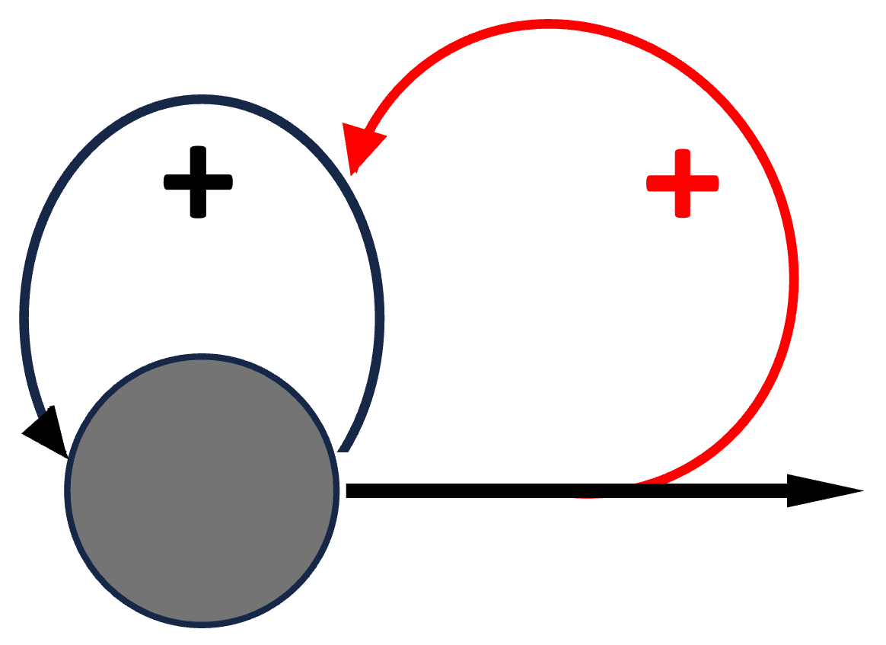
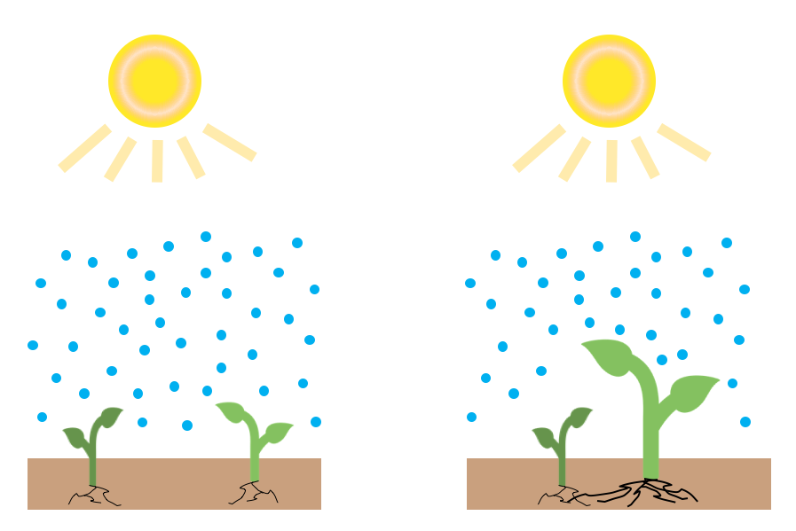
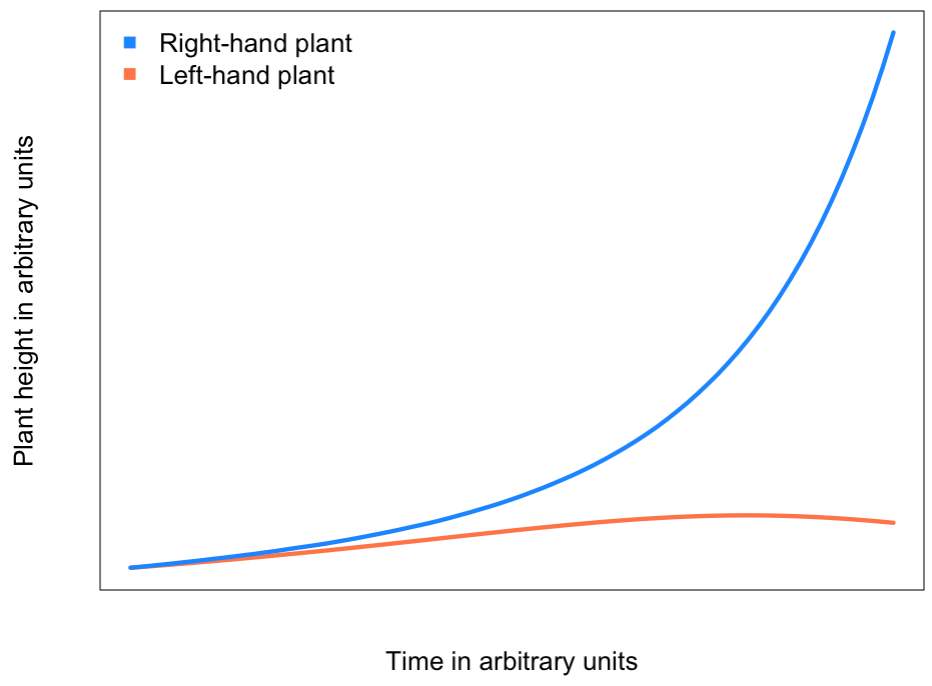
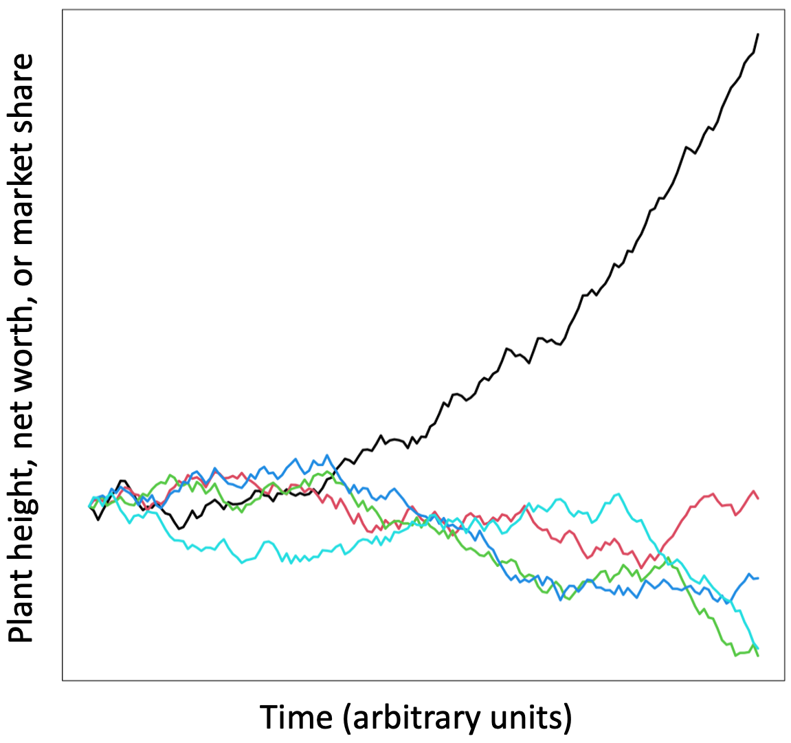
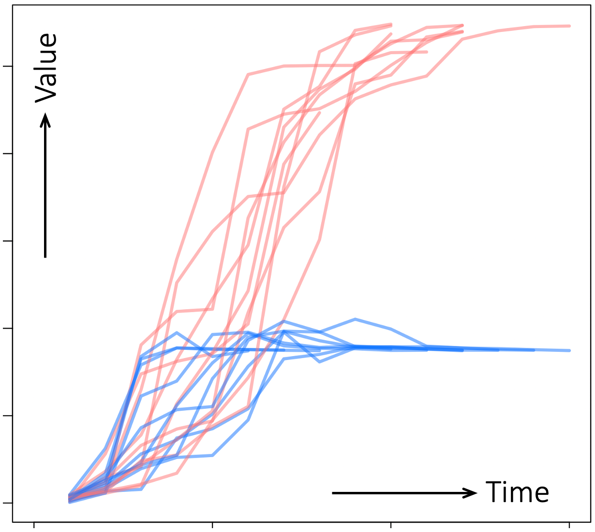
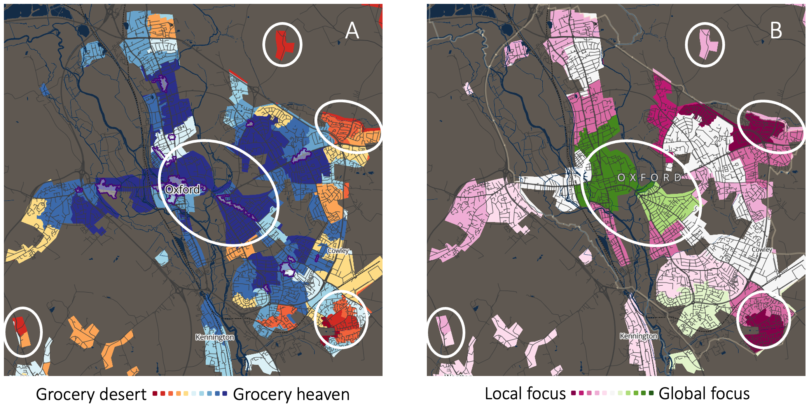
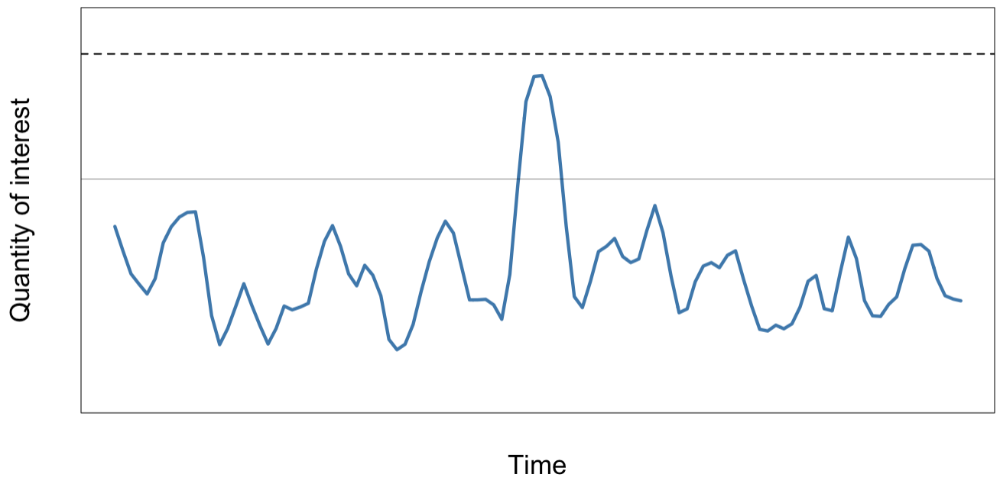
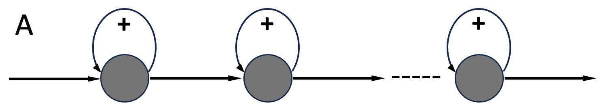
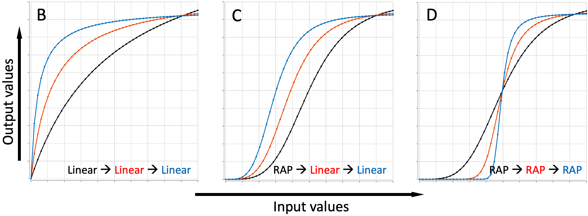
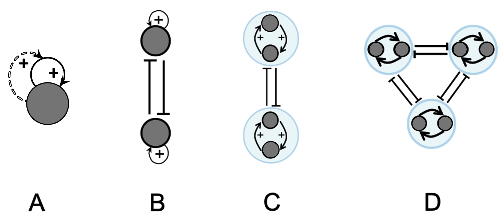

4 Common Mechanisms of RAP-Inducing Positive Feedback
We saw in the previous chapters that Runaway Polarization in Human Systems has two key characteristics. First, RAP increases relative inequality via positive feedback loops that affect outliers far more than the middle-ground. For those in one of the two opposing camps of a polarizing distribution, this characteristic leads to changes over time that look like a hockey-stick or the letter J (a slow initial phase, followed by a precipitous rise in polarization). In the earlier savings-account example of RAP, I simply pre-specified that interest (i.e. feedback) rates would be higher for higher account balances. But that was just to keep our example simple. In practice, the nonlinear changes in the feedback rates underlying RAP arise from direct and indirect interactions within a system. In this chapter, I will review different kinds of interactions that commonly create nonlinear RAP-inducing feedback rates.
4.1 When Winners Proactively Modify an Existing Feedback Rate
One common way for the emergence of RAP-inducing (nonlinear) positive feedback loops in Human Systems relies on human agency and ingenuity. As we will see in Chapter 7, systems with many interactions among their components – typical in Human Systems – generally contain many positive feedback loops. However, given that nonlinear feedback is more complicated than linear feedback, most of these feedback loops are likely to be linear (proportional), and therefore not RAP-inducing.
In Human Systems where polarization creates losers and winners, the situation may be different. Winners can use their increased power/resources to amplify the feedback rate of the self-reinforcing loop that got them there in the first place (see schematic summary in Figure 4.1). For example, a company can grow exponentially (via linear positive feedback) by simply reinvesting its profits in growth 1 (as championed by billionaire businessman Charles Koch 2). But the company can grow in additional ways. The company may benefit from economies of scale as it grows; it may be able to command better deals; it may recruit better-qualified staff and retain them longer, etc. All these additional benefits of winning would increase the company’s rate of growth, incrementally turning a linear feedback loop into a RAP-inducing nonlinear feedback loop.

Figure 4.1. A positive feedback loop whose feedback rate is itself subject to positive feedback. The black rounded arrow indicates a (potentially linear) positive feedback loop, whose rate in amplified by a secondary feedback loop (red curved arrow).
4.2 Competition for Limited Resources
Another way in which an existing linear positive feedback loop can be augmented to drive RAP is via competition for limited resources 19. Imagine two seedlings planted too close to each other (Figure 4.2). Suppose that at planting time, the two seedlings are exactly the same size, and small-enough that they initially grow independently of each other. In that case, each plant will grow in proportion to the amount of sunshine, water, and soil nutrients within its reach, creating a self-reinforcing burst of initial growth 20.

Figure 4.2. Two seedlings planted too closely. If one happens to grow bigger than the other, it will grab a larger and larger share of available nutrients until it reaches its maximum growth potential.With the seedlings too close to each other at the start, as they grow, the roots and branches of the two seedlings will start to overlap and compete for the water, sunshine, and soil nutrients in their vicinity. At this point, growth by one plant will inhibit growth of the other plant. If, by random chance, one plant happens to grow a little bigger than the other, its growth advantage will be amplified and reinforced by its existing growth-reinforcing feedback loop. As illustrated in the example simulation results in Figure 4.3, the result is that one seedling will grow at the expense of the other, and the size difference between the two seedlings will grow exponentially in both absolute and relative terms.
The details of the model are irrelevant here, except for one feature. In this biologically-inspired example, the “winning” seedling doesn’t increase its own growth rate as a result of the competition. Rather, it continues to grow exponentially at the expense of the other seedling, so the relative sizes of the two plants diverge exponentially.

Figure 4.3. Runaway polarization of two seedlings competing for limited resources. The two seedlings start off identical. Each seedling grows in proportion to the amount of nutrients it can absorb, which in turn is proportional to its size. Once the plants overlap, any random difference in past growth or current resource availability is amplified by competition. The result is that one plant grows at the expense of the other, creating a runaway divergence in the sizes of the two plants. For simplicity, in this simulation, I used plant height as an indicator of size and reach. Also, I am focusing on the initial growth burst, before the process is slowed down by physical and biochemical limitations.
In contrast to seedlings and other natural systems, human ingenuity often overcomes growth constraints in Human Systems. As an example, let us reformulate the seedlings model to represent two companies competing for market share in a small town. Once the winning company conquers its local market, it need not stop growing. The business may initially expand to nearby towns, then to the entire state, then the entire country and then the entire world, and even then, it need not stop because the business can be diversified into new sectors. Think for example of Amazon going from an online book store to selling everything, to becoming the dominant cloud computing provider. This kind of indirect growth strategy is not a new phenomenon. Here is an example given by the historian Eric Hobsbawm 21:
[…] the frankly economic wars of the British in the seventeenth and eighteenth centuries were not supposed to advance economic development by themselves […], but by victory: by eliminating competitors and capturing new markets.
Note that the above feedback-compounding principles apply equally to resource competitions involving more than two players (e.g. multiple companies competing for market share), as illustrated in Figure 4.4.

Figure 4.4. Runaway polarization when multiple players compete for limited resources. The model is essentially the same as in the previous figure, extended to multiple players. The players in this simulation start identical. But, random fluctuations in their market share are amplified by nonlinear positive feedback, ultimately leading to one player dominating all others. The exact details of how quickly a single winner emerges, how fast the winner diverges from the competition, etc., vary with the model parameters. But RAP arises in all cases.
Another important variation on this theme involves competition among internally self-reinforcing groups. For example, two or more companies co-owned by a conglomerate could mutually support each other’s growth, while competing with other companies. In such scenarios, RAP arises from competition between groups (companies, tribes, members of political parties), and increases relative inter-group inequality. See Figure 4.5 for an illustrative example.

Figure 4.5. Example simulation of groupwise cooperate-compete dynamics. The plot shows the evolution of the values of two groups (blue and red lines). Each group’s members share resources while competing against members of the other group for limited resources. All participants start with a small random value. At each timestep, one participant is selected randomly and updated (as a result, individual lines end at different timepoints). Results shown are from a representative simulation run for two groups of ten.
The competitive dynamics I have described above are all variations of a concept known among ecologists as the Competitive Exclusion Principle (reviewed in Appendix 3). For completeness, let me briefly mention that zero-sum competitions don’t always end up with one side dominating the other(s). A trivial alternative stable outcome is mutual destruction: with all competitors annihilated, there is no one left to compete, making this a stable (if undesirable) state.
In politics and economics, competitions can get bogged down in stalemates either when none of the competing parties have the resources to win, under threat of Mutually-Assured Destruction 3, or occasionally, when a stalemate is a desirable state (reviewed in 4) 22. “Desirable stalemate” can happen when one party ensures damaging, never-ending competition among its rivals, or when the feuding parties benefit from special conditions brought about by competition (e.g. special war-time regulations).
Last, and most relevant to this book, as we will see in later chapters, changing the rules of competition can create situations where a win-win outcome becomes both desirable and feasible for all parties involved.
4.2.1 RAP Leads to RAP In New Dimensions
As we have seen, RAP invariably leads to the emergence of a few dominant outliers. Even among members on the same side of a polarized divide, a few individuals will be far more polarized and therefore sway the population distribution more than everybody else. One side-effect of this such skewed distribution of power and influence is that – at the population level – RAP limits opportunities for most participants. It does so not only by making the vast majority powerless compared to the population outliers, but also by reducing their exposure to alternative perspectives and resources. We end up in Henry Ford’s world of “Any customer can have a car painted any color that he wants as long as it is black” 23. As an example, in the Pacific Northwest where I live, people in the coastal tech-heavy cities don’t have frequent interactions with their rural neighbors in the east, and vice-versa, leading to highly polarized politics. The business, cultural, and educational opportunities available in the coastal cities are less accessible to those in the rural east, and people busy in the cities don’t experience the joys and challenges of living in rural areas with spacious, natural spaces, calm, quiet, and tightly-knit communities, and the challenges of sparse infrastructure and lack of economic opportunities.
Because human endeavors are often inter-related, and flavored by the people we most interact with, polarization in one dimension often leaks into many other aspects of our lives. For example, segregated, polarized neighborhoods may end up with different kinds of local businesses and shops, or different levels of funding for schools, libraries, social services, etc. 6 (see Figure 4.6 for an example). The result is that RAP often leads to more RAP in ever-expanding areas of life.

Figure 4.6. Local communities often polarize across multiple dimensions. Both maps are of Oxford, England. The color map in panel A shows local density of grocery stores. The color map in panel B shows local-versus global focus of internet use. White ovals highlight example neighborhoods where A and B are highly correlated. Maps generated by the Geographic Data Service (GeoDS.ac.uk), a Smart Data Research UK Investment: ES/Z504464/1 (for additional maps, see mapmaker.cdrc.ac.uk/).
For an intuitive sense of how RAP spreads inequality across dimensions, let’s revisit our earlier compound-interest savings example involving Alice and Jane. Let’s say Alice’s parents are poor whereas Jane’s parents are well-off. Both children are given the same amount of money at birth, to be invested and left untouched until they reach 21. Alice’s parents simply put her money into a savings account at their local bank. Jane’s parents add her funds to their professionally-managed investment portfolio, which offers significantly higher returns. As a result, by the time she reaches 21, Jane can access many opportunities unaffordable to Alice (e.g. travel, art and cultural activities, college/graduate school, volunteer work, unpaid internships). Each of these opportunities will potentially increase the inequality between Jane and Alice in new dimensions.
4.3 The Birth of New Feedback Loops
In contrast to illustrative models such as the see-saw and the savings account examples, in real Human Systems both competition for limited resources and self-reinforcing feedback are often indirect. Such indirect loops are common in Human Systems because novelty is almost always produced by combining earlier developments, and novelty that is not a combination of existing things is relatively rare 7.
The Adjacent Possible 24 is defined as the set of all events that are possible at any given time 8. Every time something new happens, it makes many new combinations of things possible. Because of the combinatorial nature of novelty, the size of the Adjacent Possible grows explosively. A corollary of this idea is that everything in the world is dependent on a great many other things, creating a very highly connected network. But the world’s interdependencies don’t end there, as they mature, new things tend to influence and change the things that gave rise to them, creating loops of influence.
For example, the World Wide Web could only be invented once a physical internet network, network communication protocols, and markup languages had been invented. At the same time, the creation of the web has caused the things that had made it possible to grow in various ways. The physical internet has become truly worldwide. Internet communication protocols have evolved to support scalability and security. HTML has been repeatedly extended and refined to be more flexible and dynamic. In short, the web and the things that enabled it are in a mutually reinforcing feedback loop, helping each other grow and mature. And they are making the growth of new things possible. The web made online services possible, and online services in turn have accelerated the evolution of the web.
The takeaway is that everything in the world is highly dependent on, and affects, many other things. In such systems with highly interacting parts, feedback loops are very common (more in Chapter 7). This point is crucial when considering real-world drivers of RAP. For every feedback loop that we manage to spot in the real world, there are likely to be many additional indirect feedback loops, and even more will be created over time. As a result, any model of feedback dynamics in actual Human Systems is unlikely to be the complete picture, and even if it were, it would not be so for long. As the statistician George Box famously said, all models are wrong, but some are useful 9. Models never represent reality exactly. They are abstractions that can provide useful insights when formulated carefully.
As an example, consider business mergers and acquisitions. When large corporations buy promising start-ups, they may directly amplify the resources (technologies, markets, know-how) available to themselves, increasing their growth rate. At the same time, by making the staff and products of the acquired start-up unavailable to their competitors, companies taking over start-ups can inhibit the growth potential of their competitors. The model I have just described obviously misses many details. But in doing so, it highlights a sometimes-unacknowledged effect of mergers, which can be viewed as a testable hypothesis.
4.4 Compartmentalization Facilitates the Emergence of RAP
A compartment is any environment (physical or virtual) that is in some way insulated from the rest of the world. Segregation – by race, socio-economic status, caste, language, culture, etc. – is a form of spatial compartmentalization. How people interact within and outside their compartments are often different:
One of the great tragedies of man’s long trek along the highway of history has been the limiting of neighborly concern to tribe, race, class, or nation.
Martin Luther King 25
But compartments are not always bad. They can create sheltered environments in which we can focus on something that is of special interest. Retreats, shelters for abuse victims, and addiction clinics are compartments that emphasize insulating and protecting residents, while start-ups, research institutes, and community-centers are compartments that emphasize concentration and exchange of ideas and resources 26.
Some compartments are fundamental to life. The cells and organs within our bodies are essential compartments. Our bodies are compartments, and so are our minds:
The mind is its own place, and in itself.
Can make a Heav’n of Hell, a Hell of Heav’n.John Milton 27
Buildings are compartments, countries are compartments, families and sports-clubs are compartments, and so are business, and political and economic organizations. But compartments need not be physical or permanent. We compartmentalize when we work: we (try to) set aside personal and family worries and focus on our work. And then later, we (try to) switch compartments, leave work behind, and focus on family.
Compartmentalization is a form of polarization, and polarization often leads to compartmentalization. When we compartmentalize, we take something of special interest to us and polarize it. We maximize the quantity of interest in one compartment, and minimize it elsewhere (other compartments). This process reduces inequality within compartments, while increasing inequality between compartments.
The more we segregate (compartmentalize) into communities of people “like-us”, the less we are exposed to people and ideas that challenge our biases and offer alternative perspectives 10,11. For example, in his 2003 book “Why Stock Markets Crash” 28, Didier Sornette argues that many market crashes are caused by traders working in bubbles (insular compartments), where they end up copying each other’s actions in a death-spiral that ultimately is bad for everybody.
Social media on smartphones often create intangible, virtual compartments by providing quick and constant updates on issues that interest us. We optimize the process by choosing the topics and people about whom we receive ‘posts’, ‘alerts’, ‘status updates’, ‘push notifications’, etc. But with so much “interesting” information coming our way all the time, we end up only hearing about things from the perspective of our existing biases. We amplify and reinforce our in-group’s biases, and reduce our ability to empathize with people and ideas outside our in-group.
The focus on within-compartment interactions can also take away the many ‘background’ daily interactions we have with people not like us. Individually, such “weak” interactions have little significance, but when there are a lot of them, they are surprisingly powerful sources of community 12,13, an idea first put forward by Mark Granovetter more than 50 years ago 14.
Putting the above considerations together, compartments can be dangerous in two ways. First, it is harder to notice biases and assumptions within homogeneous compartments. Second, compartments isolate us and rob us of the creative growth opportunities that come with exposure to unexpected new ideas and approaches. In this sense, polarization feeds on itself, creating a vicious-cycle in which we increasingly fail to be aware of – let alone explore – alternative viewpoints. The more blinkered we become, the more we lose sight of potential opportunities, especially win-win scenarios. The “other camp” stops being a collection of individuals, and instead becomes an abstract symbol of what we are not. Box 4.1 provides a concrete example.
Box 4.1. The Self-Reinforcing Feedback Between Polarization & Isolation
I get a first-hand experience of how compartmentalization creates blinkered viewpoints every time I visit Iran. Iranian national television broadcasts about the US are full of reports of police brutality, race riots, and Hispanic migrants being violently captured and deported. Interspersed among these are shots of rich Americans ignoring beggars, long lines at food banks, drug addicts passed out on sidewalks, and sprawling encampments of homeless people. Current-affairs and news programs regularly show the American military at war around the world, the camera lingering on wounded and dead children, parents crying or swearing revenge.
I usually have to stop watching after a few minutes. None of the footage that I have seen is fake or untrue. But it is not the whole truth 29. The kinds of Americans that I have come to love and respect are not mentioned, or only referred to as the exceptions that prove the rule 30.
I blame all this on the extreme isolation of Iran that sanctions have created. I doubt that any of the people who periodically chant “Death to America” in the streets of Iran have ever met an American, let alone befriended one. Sanctions and visa restrictions make it almost impossible for the average Iranian to travel to the West, and red-tape and safety fears have made Western visitors to Iran a rarity. In this sense, sanctions are a self-fulfilling prophecy.
The irony is that when I return to Seattle, I find that even liberal western media subtly reinforce the Othering of Iran. I don’t mean the intentionally polarizing views of some ideologues, but the more subtle biases of everyday media portrayals, such as translations that make Farsi speakers sound strangely alien. To deliver what subscribers want, media outlets employ reporters who reflect the views of their subscribers, and edit news items to appeal to their base. The result is a self-reinforcing feedback loop that amplifies our biases 31.
Needless to say, this kind of caricaturing of people in the ‘other camp’ as fundamentally “not-like-us” is neither limited to Iranians nor new. In a 1994 book 15, the psychiatrist Jonathan Shay traces it back all the way to biblical notions that God’s enemies should be exterminated like vermin.
4.5 Time Compartmentalization
I mentioned in earlier that compartments can repeatedly appear and disappear over time, for example when we switch between “work” and “home” compartments while working from home. Instead of thinking of compartments that appear and disappear in time, sometimes it is useful to think of time itself being divided into distinct compartments. For example, a “staycation” (a vacation at home) is a compartment of time in the sense that we dedicate the period of the vacation to relaxing with family and friends, and exclude from it activities relating to work, etc.
The key point here is that the total amount of what can be done within a compartment of time is limited. Doing more of one thing during a vacation necessarily means doing less of something else. In this sense, a time bubble is similar to a social media bubble. We choose what we focus on, and ignore the rest while we are in the bubble.
There are obvious ways in which time-compartmentalization is necessary and useful. Who doesn’t want a vacation? But it can also backfire and facilitate polarization in two ways. The first is that we focus on fixing our immediate needs at the expense of our broader/more long-term well-being. For people with plenty of slack, this is actually a great way to address urgent matters. If you fall and are injured, it makes sense to get immediate medical treatment even if it costs you time, money, and lost opportunities. And then, sometime later, you can fix the uneven paving, or loose step that tripped.
But when resources are limited, urgent needs can leave us without the wherewithal to address the underlying issues that cause short-term emergencies. A societal example of this situation is provided by Colburn and Aldern in their analyses of the causes of homelessness 16. Colburn and Aldern note that shelters and transitional housing facilities address immediate needs, but can never solve homelessness unless affordable, long-term, low-cost housing is made available to those who can live independently. However, they say:
Politically, […] it is often expedient to invest in temporary solutions for the purpose of demonstrating quick, tangible (ostensible) progress […].
Lack of rainy-day resources can also trigger a potentially catastrophic downward spiral for those on the losing side in a RAP world (see Figure 4.7 for an example). If you don’t have the resources to survive an adverse-event, you may be forced to accept ‘help’ on onerous terms (in effect taking a bet that the future will be much better than the past). Note that this effect is not limited to individuals, it is equally applicable to businesses, cities, and states, as the Columbia economist Jeffrey Sachs has argued 17:
The problem for the poorest countries is that poverty itself can be a trap. […] The poor need their entire income, or more, just to survive.

Figure 4.7. The importance of having some slack. Slack is the difference between the level of resource available and the level of resource needed at any given time. In this schematic figure, the two horizontal lines mark the maximum amounts of some resource (e.g. money) available to two different people. The curved line represents the level of need for that resource. A short-term shock (spike in the center of the curve) is tolerable for a person with slack (upper horizontal line), but pushes a person with little slack beyond what they can manage. They may have to borrow money, or forego a medical treatment, or be unable to travel to work, potentially creating a downward spiral.
The behavioral economists Sendhil Mullainathan & Eldar Shafir explore this issue extensively in their 2013 book “Scarcity: why having too little means so much” 32, so I will not say more about it here. But I want to highlight a related potential drawback of compartmentalizing in time.
Given that those with more resources can better handle urgent matters, they may be tempted to create urgent situations in order to defeat competitors with less resources. For example, a large conglomerate may intentionally sell some goods and services at a loss in order to drive smaller competitors out of business. Once the competitors have folded, the conglomerate can raise its prices without fear of competition. As Naomi Klein explains in her 2007 book “The Shock Doctrine: The Rise of Disaster Capitalism” 33, an inherent risk in “short-term pain for long-term gain” strategies is that the short-term costs and the long-term rewards often don’t go to the same people.
Consider for example the decision for a nation to go to war, an extreme outcome of polarization. Few people think of war as something good or desirable in itself. But many favor war if it is viewed as taking decisive short-term action to stop atrocities (as in World War II). Sometimes left unsaid, and often forgotten altogether, is the assumption that once the immediate threat is removed, long-term efforts will be needed to rebuild communities and civic institutions that will avert recurrences 34.
To summarize, compartments permit, nurture, and deliver extremes of performance across most aspects of life, from Olympic athletes training at camp and students and researchers in elite schools, to governments taking special short-term measures to respond to a crisis. In this sense, they are extremely useful and probably unavoidable. However, sometimes, we get stuck in the blinkered perspective of a compartment. At other times, the benefits of compartments are not shared equally among privileged and disadvantaged groups, thereby increasing polarization.
4.6 Amplifiers of RAP-Inducing Feedback Loops
So far, this chapter has focused on how RAP-inducing feedback loops are generated. This section will review mechanisms that can boost the effects of an existing RAP-inducing feedback loop by either increasing the number of entities affected, or by increasing the extent of polarization among a fixed group of entities (e.g. a population).
A simple and common type of amplification happens when activists, influencers, advertisers, etc. expand the reach of an existing feedback loop. For example, political think tanks and politicians often mutually support each other, while sympathetic media can amplify their societal impact and reach. In this scenario, the amplifier is not part of the feedback loop, so the amplification does not affect the RAP-inducing feedback loop or its behavior; it just amplifies its downstream effects. However, over time, downstream amplifiers are often coopted and integrated into the RAP-inducing feedback loop; such as when a media personality becomes an advisor to a politician or activist group.
The second mechanism of amplifying RAP-inducing feedbacks involves cascades of positive feedback loops each amplifying the effects of the earlier stages (see schematic in Figure 4.8A). As long as one of the feedback loops in the cascade is – even weakly – RAP-inducing, subsequent feedback loops (linear or nonlinear) can amplify its RAP-inducing effects 18, as in the examples in Figure 4.8B-D. To make this abstract concept more concrete, here is an example from my personal experience.
In my first year at college, I took an extra-curricular course on how to learn effectively 35. The course made a big difference to how I later went about reading textbooks, taking notes in lectures, and revising for exams. But I didn’t just happen to take the course by accident. I chose to take the optional course because experiences such as my pre-school library-club (see Box 0.1) had already made me curious and eager to learn. Compared to a version of me without my pre-school experiences, I got much more out of my undergraduate education, which allowed me to go on to post-graduate studies, which in turn made it much easier for me to get my public-practice license as an engineer, which led to better job opportunities, and so on.
My pre-school library club improved my educational status at the time. But, more importantly, it also changed my approach to future opportunities by making me more curious and more proactive. As the sociologist Dalton Conley says, we don’t just react to events, we “modify the environment around us, seek out specific inputs, and evoke particular social responses.” 19. In other words, we shape our chances of future success. And the more we succeed, the more we increase the rate of return on our future efforts. In this way, my pre-school training created a weak but nonlinear feedback loop (increasing my desire to learn) that was subsequently amplified by a series of success-breeds-success events.
This kind of successive amplification of learned traits may be why environmental factors tend to have a much stronger effect on our lives than inherited intelligence 20,21, especially in countries with well-developed social care and educational systems that reward efforts appropriately 22.


Figure 4.8. Cascading positive feedback loops can amplify RAP. A. Schematic representation of cascading positive feedback loops (looped arrows with + sign). Each stage sequentially amplifies the output of the previous stage. B. If all the stages in a feedback cascade are linear, the cascade as a whole will also only act as a linear positive feedback loop, with a linear response that levels off as the response reaches a limit. C, D. As long as one of the stages in a feedback cascade is nonlinear (i.e. RAP-inducing), subsequent stages (linear or nonlinear) can amplify and sharpen the degree of polarization.
Variations on this theme abound in Human Systems. For example, the bigger a company gets the more local politicians will value its contribution to the local economy and listen to its demands 23. In the arts, more celebrated artists are better able to attract interest in their latest work via the press and social media, and so on. The end result of all of the above processes is that successive positive feedback loops can turn a weak RAP-inducing feedback loop (e.g. the black curve in Figure 4.8C), into a sharper J-shaped response (blue curves in Figure 4.8C, D).
4.7 A Visual Recap
We have seen that runaway polarization (RAP) in Human Systems can arise from a variety of common mechanisms. The key mechanisms described in this chapter are summarized visually in Figure 4.9. I am including it here as a cheat sheet/quick reminder to come back to as you read on.

Figure 4.9. Schematic summary of the mechanisms that drive Runaway Polarization. Filled disks represent an entity (a person, a company, etc.). Curved arrows indicate feedback loops. A. A positive feedback loop (solid arrow) whose rate is subject to positive feedback (dashed arrow). B. Competition-mediated nonlinear self-reinforcing feedback. The arrows indicate (potentially linear) positive feedback. The lines with a T-shaped end represent the mutually-inhibiting effect of the two participants on each other when they compete for one or more limited resources. (C, D) Examples where multiple entities (dark disks) cooperate to create positive feedback loops within groups (shaded backgrounds), and group-wise compete for limited resources. Note that, within each group, cooperative positive feedback interactions can involve any number of people, and any number of groups can be involved in competitive interactions (interactions among more than three people, or three groups, are hard to visualize and therefore not shown here).
4.8 References
1. Sornette, D. & Cauwels, P. Financial Bubbles: Mechanisms and Diagnostics. Rev. Behav. Econ. 2, 279–305 (2015).
2. Koch, C. G. Good Profit: How Creating Value for Others Built One of the World’s Most Successful Companies. (Crown Business, 2015).
3. Sokolski, H. D. Getting Mad: Nuclear Mutual Assured Destruction, Its Origins and Practice. (Strategic Studies Institute, 2004).
4. Blanken, L. J. & Lepore, J. J. Optimizing the Stalemate: Limited Conflicts and the Use of Special Operations Forces in the Context of Global Competition. Inter Popul. J. Irregul. Warf. Spec. Oper. 1, 41–60 (2023).
5. Galvin, D. J. & Hacker, J. S. The Political Effects of Policy Drift: Policy Stalemate and American Political Development. Stud. Am. Polit. Dev. 34, 216–238 (2020).
6. Rodden, J. A. Why Cities Lose: The Deep Roots of the Urban-Rural Political Divide. (Basic Books, 2019).
7. Loreto, V., Servedio, V. D. P., Strogatz, S. H. & Tria, F. Dynamics on expanding spaces: modeling the emergence of novelties. in Creativity and Universality in Language 59–83 (Springer International, 2016).
8. Björneborn, L. The Palgrave Encyclopedia of the Possible (Edited by V. P. Glăveanu). (Palgrave Macmillan, 2020).
9. Box, G. E. P. Science and Statistics. J. Am. Stat. Assoc. 71, 791–799 (1976).
10. Enos, R. D. The Space between Us: Social Geography and Politics. (Cambridge University Press, 2017).
11. Pandian, A. Something Between Us: The Everyday Walls of American Life, and How to Take Them Down. (Redwood Press, 2025).
12. Sandstrom, G. M. & Dunn, E. W. Is Efficiency Overrated?: Minimal Social Interactions Lead to Belonging and Positive Affect. Soc. Psychol. Personal. Sci. 5, 437–442 (2013).
13. Michalski, C. A., Diemert, L. M., Helliwell, J. F., Goel, V. & Rosella, L. C. Relationship Between Sense of Community Belonging and Self-Rated Health Across Life Stages. Ssm - Popul. Health 12, 100676 (2020).
14. Granovetter, M. The Strength of Weak Ties. Am. J. Sociol. 78, 1360–1380 (1973).
15. Shay, J. Achilles in Vietnam: Combat Trauma and the Undoing of Character. (Scribner, 1994).
16. Colburn, G. & Aldern, C. P. Homelessness Is a Housin Problem: HOw Structural Factors Explain U.S. Patterns. (University of California Press, 2022).
17. Sachs, J. D. The End of Poverty - Economic Possibilities for Our Time. (PEnguin, New York, 2005).
18. Ferrell, J. E. & Ha, S. H. Ultrasensitivity Part III: Cascades, Bistable Switches, and Oscillators. Trends Biochem. 39, 612–618 (2014).
19. Conley, D. The Social Genome: The New Science of Nature and Nurture. (W. W. Norton & Co., 2025).
20. Wilding, K., Wright, M. & von Stumm, S. Using DNA to Predict Education: a Meta-analytic Review. Educ. Psychol. Rev. 36, 102 (2024).
21. Lee, J. L., Soc. Sci. Genetic, & Association Consortium (SSGAC). Gene Discovery and Polygenic Prediction from a Genome-Wide Association Study of Educational Attainment in 1.1 Million Individuals. Nat. Genet. 50, 1112–1121 (2018).
22. Baier, T. et al. Genetic Influences on Educational Achievement in Cross-National Perspective. Eur. Sociol. Rev. 38, 959–974 (2022).
23. Elder, E. M. Company Towns: Single-Industry Dominance and Local Government Capacity. Br. J. Polit. Sci. 55, 1–18 (2025).